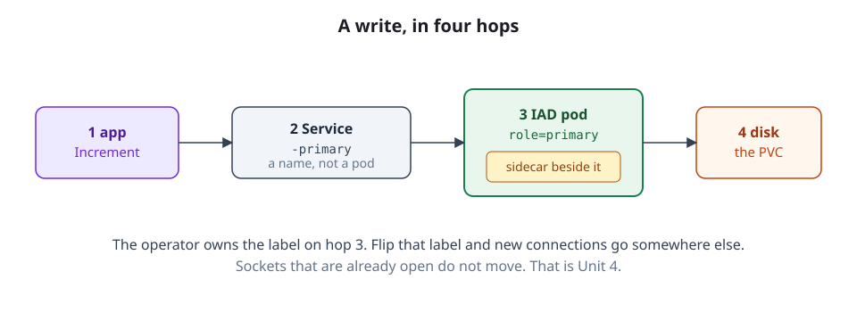

The moving parts
An operator that polls, a sidecar that fences, four kinds of Service, and three site roles. Which component can do what — and which one can act when the other is gone.
By the end of this topic you can
- Trace a write from the application through
mysql-playground-primaryto the pod that currently owns it - Say what the sidecar does that the operator cannot, and why the binlog archiver lives there
- Tell
primary-candidate,dr-onlyandread-onlysites apart by what each is allowed to become
playground is running. Three sites — iad, pdx and reader — and a counter whose page reads
every two seconds and whose one button writes. What you cannot yet say is which pod that
button’s next UPDATE lands on, or who decided it should be that one.
Four things stand between the application and a MySQL data directory. Meet them in the order a write meets them.
First contact: the Services
The counter does not connect to a pod. It connects to mysql-playground-primary.

mysql-playground-primaryBloodraven creates four kinds of Service per group. Four kinds, not four objects. Two kinds
are per-site, two are group-wide, so the count is 2 × len(sites) + 2. For playground that is
eight Services.
| Service | Scope | What it is for |
|---|---|---|
mysql-playground-primary | group | The write endpoint. Exactly one pod behind it, or none. |
mysql-playground-replicas | group | The read endpoint. Every replica currently fit to serve. |
mysql-playground-<site> | per site | Site-local access — mysql-playground-iad, and so on. |
mysql-playground-<site>-internal | per site | The stable in-cluster address replication and the sidecars point at. |
-primary selects on two labels: app.kubernetes.io/instance=playground and
shipstream.io/role=primary. -replicas selects on three: instance,
shipstream.io/role=replica, and shipstream.io/healthy=yes.
That third label is not decoration. For a read-only reader the operator stamps healthy=yes
only when the site is actually replicating from the active primary and is not too far behind.
Fail the check and the pod silently leaves the read endpoint.
The per-site Services do not look at role. mysql-playground-<site> selects on name, instance
and site — plus healthy=yes, but only when that site’s role is read-only. The -internal
Service has no health gate on any site, which is the point of it: peers and sidecars must reach
a pod that is not serving yet.
During an in-place restore or the draining phase of a planned failover the operator stamps the
affected pod shipstream.io/role=fenced. That value matches neither shared selector. The pod
keeps running, keeps its disk, keeps its IP, and appears behind neither endpoint. Fencing at
the Service layer is one label write.
playgroundgroup-wide (2)mysql-playground-primarymysql-playground-replicas
iadmysql-playground-iadmysql-playground-iad-internal
pdxmysql-playground-pdxmysql-playground-pdx-internal
readermysql-playground-readermysql-playground-reader-internal
Confirm the count:
kubectl get svc -n bloodraven-playground \
-l app.kubernetes.io/instance=playground -o nameEight lines. Six of them carry a site name.
Second: the operator
Something has to decide which pod wears role=primary. That is the operator: a single
Deployment, one replica, with leader election enabled. It polls every site, evaluates what it
sees, and writes labels, status and DNS. Unit 2 takes the poll loop apart.
The operator is not on the request path. A healthy primary and replica keep serving with zero operator involvement. Kill it and your application does not notice.
The bill comes due elsewhere. While the operator is down, nothing gets promoted.
Third: the sidecar
Every MySQL pod runs a second container beside mysqld. Its independence is the whole point.
The sidecar can set super_read_only=ON on its own MySQL with the operator dead, unreachable
or mid-crash-loop. It does not ask permission. That is the thing the operator structurally
cannot do: an operator that cannot reach a site cannot fence it, and the sites you most need
fenced are exactly the ones you cannot reach.
The binlog archiver lives there for a physical reason. Point-in-time recovery needs sealed
binlog files, and finding them means watching the data directory on disk. That disk is
ReadWriteOnce — one node, not one pod. A central operator on some other node cannot mount
it. The archiver has to run where the data is.
Fourth: the roles
Each site declares a role. The enum has three values. It defaults to primary-candidate. One
rule separates them: promotability is exactly role == primary-candidate.
| Role | May be promoted? | Counted in the topology tallies? | In playground |
|---|---|---|---|
primary-candidate | Yes — the only role that may | Yes | iad, pdx |
dr-only | Never | Yes — it counts, it just cannot win | none |
read-only | Never | No — excluded from the tallies | reader |
dr-only is the one people get wrong. It is a full participant in the topology view. It simply
cannot win a promotion. read-only goes further: invisible to the decision, never a backup
source. Any non-candidate found writable is routed straight to fencing.
Where you now stand
You can trace the counter’s write: mysql-playground-primary → the pod labelled role=primary
→ whichever of iad or pdx is the active site. You can name every pod’s role in playground
without guessing: iad and pdx are promotable, reader never is, and only one is writable
at any moment.
Next: why this shape, and what Bloodraven will refuse to do for you.
Flashcards
The mysql-playground-primary Service selects on which pod labels?
Two: app.kubernetes.io/instance=playground and shipstream.io/role=primary. No health label.
The mysql-playground-replicas Service selects on which pod labels?
Three: app.kubernetes.io/instance=playground, shipstream.io/role=replica, and shipstream.io/healthy=yes.
How many Service objects does the operator create for a group, and what is the formula?
2 × len(sites) + 2 — two per-site kinds plus two group-wide kinds. For three-site playground: eight.
A pod is stamped shipstream.io/role=fenced. What changes at the Service layer?
It matches neither the -primary nor the -replicas selector, so it drops out of both group endpoints while still running.
What does the operator do that no sidecar can?
Decide across sites — it is the only component that sees every site and picks which one is primary.
What does the sidecar do that the operator cannot?
Fence its own MySQL — set super_read_only=ON locally — with the operator dead or unreachable.
Why can the binlog archiver not run centrally in the operator?
It needs the MySQL data PVC mounted, and a ReadWriteOnce PVC is bound to one node — so it must run in the pod that has it.
Which binlog files does the archiver upload?
Only sealed ones — it drops the last entry of the index, which is the binlog MySQL is currently writing.
Role: primary-candidate
The only role that may be promoted. Promotability is exactly role == primary-candidate.
Role: dr-only
Counted in the topology tallies like any core site, but never eligible for promotion.
Role: read-only
Excluded from coreCount and all three state tallies; never taints a node and cannot be a backup source.
Active site versus primary candidate — what is the difference?
primary-candidate is a static role you declare in spec.sites; the active site is the one site currently holding writable authority.
Quiz
Show answer
Answer: mysql-playground-replicas
mysql-playground-replicas is the group read endpoint — instance, shipstream.io/role=replica and shipstream.io/healthy=yes — so it pools every replica currently fit to serve and drops one silently when it is not. Pointing at mysql-playground-primary works but wastes the primary's capacity on reads and puts an accidental write one bug away from succeeding. mysql-playground-reader is the near miss, and worth being exact about: because reader is a role: read-only site, its per-site Service does carry the same healthy=yes gate, so staleness is covered — but it pins the job to one pod, and the moment that pod loses the label the Service has no endpoints at all rather than falling back to pdx. mysql-playground-reader-internal is the one with no health gate: it exists for sidecar and peer traffic and sets publishNotReadyAddresses: true, so it will hand you a pod that is not serving yet. (objective 4)
mysql-playground-replicas is the group read endpoint — instance, shipstream.io/role=replica and shipstream.io/healthy=yes — so it pools every replica currently fit to serve and drops one silently when it is not. Pointing at mysql-playground-primary works but wastes the primary's capacity on reads and puts an accidental write one bug away from succeeding. mysql-playground-reader is the near miss, and worth being exact about: because reader is a role: read-only site, its per-site Service does carry the same healthy=yes gate, so staleness is covered — but it pins the job to one pod, and the moment that pod loses the label the Service has no endpoints at all rather than falling back to pdx. mysql-playground-reader-internal is the one with no health gate: it exists for sidecar and peer traffic and sets publishNotReadyAddresses: true, so it will hand you a pod that is not serving yet. (objective 4)
Show answer
Answer: mysql-playground-iad, the per-site Service, which selects on site rather than role
The per-site Services select on name, instance and shipstream.io/site — never on role — so mysql-playground-iad and mysql-playground-iad-internal still reach the pod, which is how the operator and the sidecars keep talking to a fenced instance. (iad is a primary-candidate; on a role: read-only site the per-site Service adds a healthy=yes conjunct, but role is still not in the selector.) -primary requires role=primary and -replicas requires role=replica; fenced is neither, which is the entire mechanism. Nothing is deleted: the pod keeps running, keeps its PVC and keeps its IP — only its label changed. (objective 4)
The per-site Services select on name, instance and shipstream.io/site — never on role — so mysql-playground-iad and mysql-playground-iad-internal still reach the pod, which is how the operator and the sidecars keep talking to a fenced instance. (iad is a primary-candidate; on a role: read-only site the per-site Service adds a healthy=yes conjunct, but role is still not in the selector.) -primary requires role=primary and -replicas requires role=replica; fenced is neither, which is the entire mechanism. Nothing is deleted: the pod keeps running, keeps its PVC and keeps its IP — only its label changed. (objective 4)
Show answer
Answer: False
The reversal: GTID freshness never rescues a non-candidate, because promotability is checked first and is exactly role == primary-candidate. A dr-only site is counted in the topology tallies — unlike a read-only site it is a full core participant — which is what makes this tempting, but counting and being promotable are different properties. If such a site ever comes up writable it is routed to fencing rather than accepted. To make a site promotable you change its declared role; you cannot earn it with fresh data. (objective 6)
The reversal: GTID freshness never rescues a non-candidate, because promotability is checked first and is exactly role == primary-candidate. A dr-only site is counted in the topology tallies — unlike a read-only site it is a full core participant — which is what makes this tempting, but counting and being promotable are different properties. If such a site ever comes up writable it is routed to fencing rather than accepted. To make a site promotable you change its declared role; you cannot earn it with fresh data. (objective 6)
Show answer
Answer:
The archiver has to inotify-watch mysql-bin.index in /var/lib/mysql and read the sealed binlog files directly off disk, so it needs the MySQL data PVC mounted. That PVC is ReadWriteOnce, which binds it to a single node — the node running that site's MySQL pod. A central operator scheduled on any other node simply could not mount it, so it would have no way to see rotations or read the files. The sidecar is co-located with the data by construction, so it gets the mount (read-only) for free.
A full-credit answer shows: A strong answer covers: (a) the archiver needs the data PVC mounted, for inotify on the binlog index and for direct file reads; (b) the PVC is ReadWriteOnce, meaning one node, so a central component elsewhere cannot mount it; (c) the sidecar is in the same pod, hence on the same node as the data. Credit also for noting the mount is read-only, or that the archiver gates on @@read_only so only the primary uploads. Do not credit 'to reduce operator load' or 'for scalability' alone — the constraint is a mount constraint, not a performance one.
The decision is forced by storage topology, not by design taste: inotify and direct binlog reads both require the data volume, and ReadWriteOnce means one node, not one pod. Anything that must touch the data directory has to run where the data directory is. (objective 5)
Sample answer
The archiver has to inotify-watch mysql-bin.index in /var/lib/mysql and read the sealed binlog files directly off disk, so it needs the MySQL data PVC mounted. That PVC is ReadWriteOnce, which binds it to a single node — the node running that site's MySQL pod. A central operator scheduled on any other node simply could not mount it, so it would have no way to see rotations or read the files. The sidecar is co-located with the data by construction, so it gets the mount (read-only) for free.
A full-credit answer shows
A strong answer covers: (a) the archiver needs the data PVC mounted, for inotify on the binlog index and for direct file reads; (b) the PVC is ReadWriteOnce, meaning one node, so a central component elsewhere cannot mount it; (c) the sidecar is in the same pod, hence on the same node as the data. Credit also for noting the mount is read-only, or that the archiver gates on @@read_only so only the primary uploads. Do not credit 'to reduce operator load' or 'for scalability' alone — the constraint is a mount constraint, not a performance one.
The decision is forced by storage topology, not by design taste: inotify and direct binlog reads both require the data volume, and ReadWriteOnce means one node, not one pod. Anything that must touch the data directory has to run where the data directory is. (objective 5)
Show answer
Answer: Writes keep flowing through mysql-playground-primary, and each site's sidecar can still fence its own MySQL, but nothing will be promoted if the primary dies
The operator is on the failure-detection and promotion path, not the request path, so a healthy primary and replica keep serving with zero operator involvement; correctness is still held by the sidecars, which fence locally without asking anyone. Writes do not stop — nothing is proxied through the operator, and its single replica with leader election exists for safe single-writer decisions, not for traffic. Endpoints do not shed either: shedding is an active label write the operator performs, and a dead operator writes nothing, so the labels simply freeze as they were. And the sidecars never elect anything — they enforce locally and have no cross-site view to decide a promotion with. (objectives 4, 5)
The operator is on the failure-detection and promotion path, not the request path, so a healthy primary and replica keep serving with zero operator involvement; correctness is still held by the sidecars, which fence locally without asking anyone. Writes do not stop — nothing is proxied through the operator, and its single replica with leader election exists for safe single-writer decisions, not for traffic. Endpoints do not shed either: shedding is an active label write the operator performs, and a dead operator writes nothing, so the labels simply freeze as they were. And the sidecars never elect anything — they enforce locally and have no cross-site view to decide a promotion with. (objectives 4, 5)